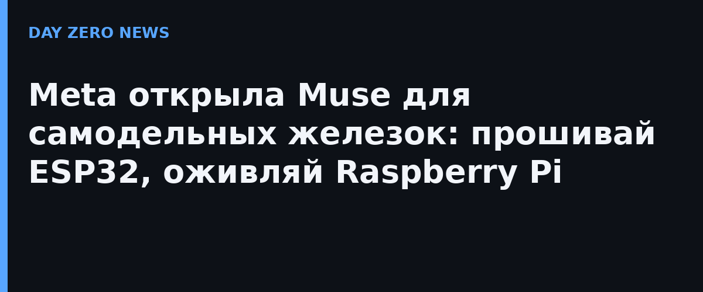

Meta 2 октября представила Muse Gadgets — набор инструментов под лицензией Apache 2.0, который ставит агента Muse на железо, собранное своими руками. На GitHub выложены прошивка для микроконтроллеров ESP32 и SDK для Linux-устройств: к агенту подключают дисплеи, кнопки, датчики, исполнительные механизмы — «что угодно на верстаке», как формулирует сама Meta.
ESP32-SDK пока покрывает 11 отладочных плат, включая официально рекомендованную Espressif ESP32-C5 DevKitC-1, M5Stack StickS3 и электронные дисплеи Seeed; шесть из них тянут полноценный интерфейс с анимированным аватаром и кнопкой вызова. Linux-SDK работает на Raspberry Pi 3B+, 4, 5 и Zero 2 W (минимум Raspberry Pi OS Bullseye, Debian 11 или Ubuntu 22.04). Muse на такой плате умеет выполнять shell-команды, читать и писать файлы, следить за здоровьем системы — официальный пример: поставить Home Assistant и проверять каждое утро в 7:00, что бэкапы прошли.
На базе SDK Meta сделала и готовое устройство — Muse Home Link: маленькая коробочка с питанием по USB-C, связывающая Muse с домашней сетью и техникой, у которой есть HTTPS-интерфейсы. Первые ~5000 штук получат подписчики Muse в США бесплатно, по одному, кто раньше успел. В документации Meta предельно откровенна о рисках: агент получает права того пользователя, под которым запущен («если аккаунт может sudo — может и Muse»), токены в прошивке — это идентификаторы, а не пароли, а в конце прямо написано, что «побочные эффекты возни могут включать превращение устройства в кирпич и потерю гарантии. Рискуйте на свой страх».
Muse Gadgets — часть недельного рывка экосистемы Muse: ранее Meta запустила Muse for Small Business (бесплатный тариф с лимитами, платные — от $20 в месяц) и новое подразделение Meta Enterprise Platform под руководством бывшего CEO MongoDB CJ Desai. Идея в том, чтобы Muse перестал быть чат-ботом и стал агентной оболочкой для железа: если устройство открывает стандартный интерфейс, агент его поймёт и будет управлять. Так личная ИИ-коробочка на Raspberry Pi постепенно примеряет роль домашнего хаба.